00读前一分钟 · 全文脉络（做完题再看也行）
📌 结构套路：价值（①）→ 问题（②）→ 新形态（②❸ ③）→ 危害与温床（④）→ 对策（⑤）。五道题严格顺序出题：36①、37②、38③、39④⑤、40⑤。
📌 和同卷 T1–T3 比一比：前三篇都是新闻报道——正反两方＋一位专家，靠引语推进，观点题考「谁说了什么」；本篇是评论文（作者是大学校长），全篇零引语，观点全是作者自己的判断句和祈使句 ⟹ 40 题的答案就在最后一句祈使句里。
📌 本篇真正的坑是「方向」：引用有施引方和被引方——36A 把「被引」换成「引别人」、37D 把「引卡特尔成员」换成「投稿人互引」、38A 的受益者是被引的作者而不是奶牛期刊自己。读到 cite / citation 就问一句：谁引谁、谁得好处。
01原文精读
🟡 黄色高亮 = 重难点词/短语，点击右侧出卡片 ｜ 蓝色虚线 = 长难句，点击跳到精析 ｜ 每段「意」= 段落意译 ｜ 选中任意其他单词浮出「查有道」 ｜ 原文由你的浏览器从原卷识别成文字（首次约 3 秒，之后秒开）；「原卷对照」可逐句看扫描原图、改识别错字
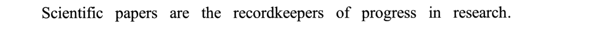
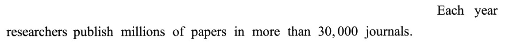
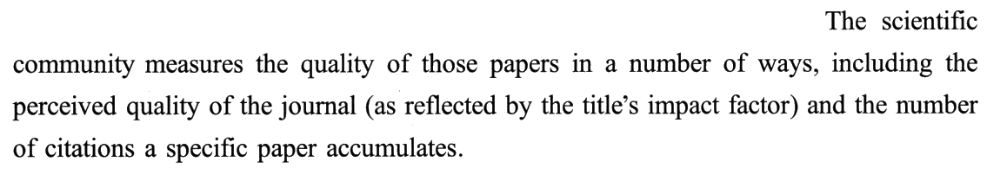
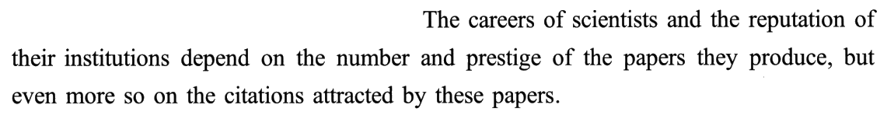
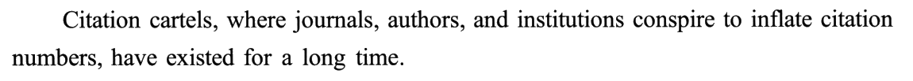
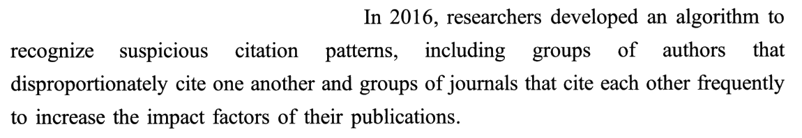
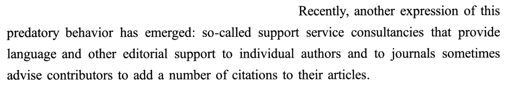
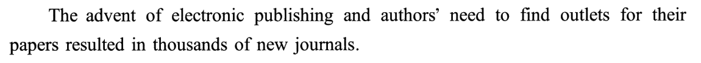
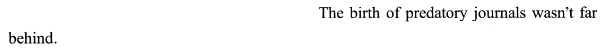
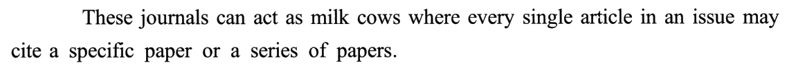
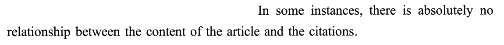
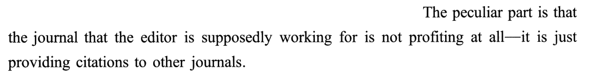
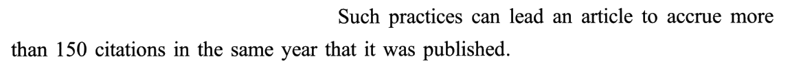
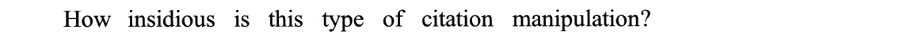
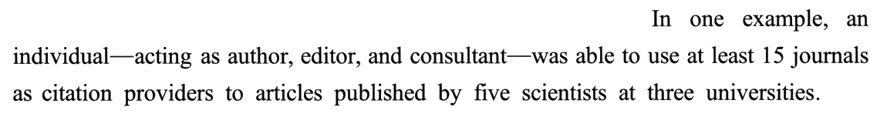
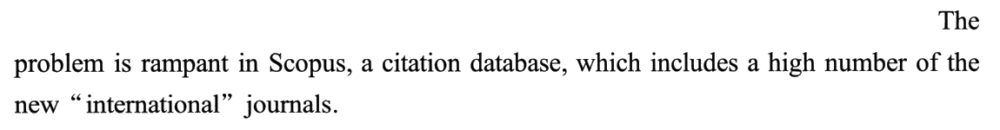
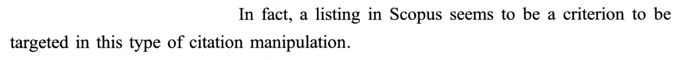
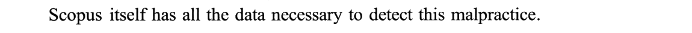
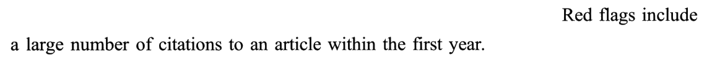
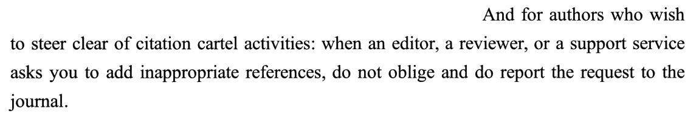
02题目与解析（点选项即判 · 再看解析）
事实细节36. According to Paragraph 1, the careers of scientists can be determined by ______.
干扰项：A 方向反——works contain citations 是论文里引了别人多少（施引），原文说的是论文被别人引了多少（被引）；①❸ 的 citations a specific paper accumulates 也是被引。C 把并列关系读成了依附关系：「科学家的前途」和「所在机构的声誉」是并列主语，一起取决于论文，不是前者取决于同事或机构的名声；何况原文说的是 institutions（机构），C 偷换成了 people。D status 看着像 reputation / prestige，但原文这两个词一个属于机构、一个属于论文，没有一个属于科学家本人；而且「地位」决定「前途」本身是循环论证。
技巧：见到 but even more so on，命题人几乎一定把答案放在 more so 后面——这是作者自己加的重音。再核一遍引用的方向：attracted / accumulates 都是「收进来」，contain 是「放出去」。
📕 与书解析的商榷：书判 D 时说两个词「分别指向机构的声誉、论文的声誉」，判据对；可以再补一句——D 换了主人，这是本卷最常见的错法（T3 的 34C 也是换主人）。
事实细节37. The support service consultancies tend to ______.
干扰项：A 把关系弄反——原文是咨询公司给个人作者和期刊提供编辑支持，期刊是它的客户，不是它推荐给客户的东西。B 拼接：citation patterns 在②❷（2016 年算法要识别的东西），clients 是②❸ 的事，两句说的是两件事。D 也是拼接②❷：互相引用（cite one another / cite each other）是作者群、期刊群的老模式；②❸ 的新模式是让投稿人去引卡特尔想抬的那些文章，不是投稿人之间互引。
技巧：②❸ 是本篇最长的一句，冒号前 another expression of this predatory behavior 只是承上启下，信息在冒号后；冒号后主干是「X sometimes advise Y to do sth」，中间那个 that 从句（提供语言润色）是 X 的身份介绍，是包装、不是罪状。
📕 与书解析的商榷：题干 tend to（倾向于、往往）比原文 sometimes（有时）说得重——严格说题干对咨询公司有点「放大」。但这是题干措辞，选项只管和原文对得上；四个选项里只有 C 有原文支撑，不影响答案。
比喻含义38. The function of the “milk cow” journals is to ______.
干扰项：B 从③❶ electronic publishing、outlets 编出「低成本发表」——③❶ 讲的是新期刊为什么多，那时还没说到奶牛，全文也没提成本。C first-time 无中生有，「指导」又是中性偏正面的词，而奶牛期刊干的是操纵。D 抓③❶ new journals，但奶牛期刊的引用是供给别的期刊的，它自己读者多不多原文一字没提。
技巧：比喻题别用中文习惯猜——中文「奶牛」「摇钱树」通常指给主人赚钱，但作者特意用 The peculiar part is that 提醒：这头奶牛自己不赚钱。所以要问的不是「谁养它」而是「奶给了谁」。Such practices（这类做法）是总括回指，它后面的「结果」就是功能。
📕 与书解析的商榷：书的语义链（These journals → where → In some instances → The peculiar part → Such practices）讲得很好；可以再强调一点——本题的难点正在「peculiar」一词：它把常识里的「奶牛＝自己获利」翻了个面，B（省钱）就是给按常识想的人准备的。
细节概括39. What can be learned about Scopus from the last two paragraphs?
干扰项：A citation providers 原词在④❷，但那是一个人动用 15 本期刊「供引用」的例子，没有任何「竞争」，更没说 Scopus 促成了什么。C 方向反：④❸ 说 Scopus 收录了大量「国际」期刊——是收进来，不是阻碍；引号是作者在讥讽这些期刊名不副实，跟发展快慢无关。D 两处偷换：① 把「能查出」换成「为防范而建」——能力变成了创建目的；② 把「事后识别已发生的」换成「事前防止」。Scopus 是引文数据库，本来就不是为打假建的。
技巧：⑤❶ 里的 itself 很值钱：上一段刚说问题在 Scopus 里最猖獗，这一段说Scopus 自己手里就有破案的数据——病灶和药方在同一个地方。作者的言外之意是「它有能力查，却没查」——B 只说 has the capability，恰好不多说一步；D 多说了一步（is established to prevent），就错。
📕 与书解析的商榷：书判 C 时说「国际」期刊里「不乏充当奶牛的期刊」——这是推测，原文没把两者连起来；C 的硬判据是 hinders 毫无原料、且与「收录大量」方向相反。
建议40. What should an author do to deal with citation manipulators?
干扰项：A 由 malpractice、inappropriate 夸大成违法——原文只说「不当、不端」，没有一个词涉及法律。B「要对方道歉」常识上说得通，但原文没有。C 最阴：professional advice 恰恰是②❸ 咨询公司卖的东西（advise contributors），而⑤❸ 把 a support service 列在「提不当要求的人」里——去找专业人士讨主意，等于回头去问出主意的人；原文的动作是举报，不是求助。
技巧：建议题找祈使句，再找强调：do not oblige and do report——第二个 do 是助动词强调（一定要），作者把重音放在「举报」上。本篇是评论文、全篇零引语，作者的建议只会以这种形式出现在结尾。
📕 与书解析的商榷：书说期刊「是解决方」——原文只说向期刊举报，没说期刊一定清白（③段的奶牛期刊就是问题方）；C 的硬判据是动作不同：seek advice 是求助，report 是举报。
03长难句精析（正文蓝色虚线句）
- 主干：
The scientific community measures the quality of those papers，后接方式状语in a number of ways。 including …列举两种方式：the perceived quality of the journal（人们心目中期刊的水平）和the number of citations a specific paper accumulates（某篇论文累计的被引次数）。- 括号
as reflected by the title’s impact factor——as 引导的省略结构，补充「期刊水平靠什么体现」：影响因子。⚠️ title 在这里是刊名、刊物，不是标题（熟词僻义）。 citations a specific paper accumulates——省略关系代词的定语从句；accumulate 是「攒进来」⟹ 被引。36A 的 contain 方向正相反。
- 主干：并列主语
The careers of scientists（科学家的前途）与the reputation of their institutions（所在机构的声誉）＋ 谓语depend on。 - 宾语一：
the number and prestige of the papers they produce——论文的数量与分量（prestige 本指声望，这里指论文的影响力）。 - but even more so on ＝ but they depend even more on——so 替代 depend on，even more 加重 ⟹ 宾语二
the citations attracted by these papers才是重点。 - ⭐ 36 题：答案落在 more so 后面；C 把两个并列主语拆成「前者取决于后者」。
- 主干：
Citation cartels … have existed for a long time——主语和谓语被一个长插入隔开。 - 插入的
where journals, authors, and institutions conspire to inflate citation numbers——where 引导非限制性定语从句修饰 cartels，相当于给这个新词下定义：三方合谋、抬高引用数。 - ⭐ cartel 本是经济词「卡特尔」（同行企业串通定价，如石油输出国组织）；inflate 本义「充气」，引申为人为抬高（inflation 通货膨胀）——标题说引用是科学的通货，这里就是在说「引用通胀」。
- 主干：
In 2016, researchers developed an algorithm，to recognize suspicious citation patterns是不定式作目的或定语。 including …列举两类模式，结构完全对称：groups of authors that disproportionately cite one another（作者群）和groups of journals that cite each other frequently（期刊群），各带一个 that 定语从句。- 末尾
to increase the impact factors of their publications——目的状语，只修饰期刊群：互引是为了抬影响因子。 - ⭐ 37D 的「互引」就出自这一句——这是 2016 年的旧模式，主体是作者群、期刊群；题干问的是下一句的新模式。
- 冒号分两层：前半
another expression of this predatory behavior has emerged——承上（this 回指卡特尔）、启下（又一种表现）；信息全在冒号后。 - 冒号后主干：
so-called support service consultancies（主语）……sometimes advise contributors to add …（谓语）——是一个完整的句子，不是同位语。 - 主谓之间夹着定语从句
that provide language and other editorial support，后面to individual authors and to journals交代服务对象（两个 to 并列）——37A 的「期刊是客户」就从这里来。 - ⭐ so-called（所谓的）带讥讽：名义上做语言润色，实际在教人塞引用。expression 是熟词僻义「表现形式」，不是「表达」。
- 主干：
These journals can act as milk cows——These 回指③❷ 的掠夺性期刊。 where every single article in an issue may cite …——where 引导定语从句修饰 milk cows，解释比喻：一期里的每一篇文章都可能引同一篇或同一组论文。- ⚠️ issue 在期刊语境是「（一）期」，不是「问题」；
a series of papers＝一组论文。 - ⭐ 38 题：比喻的意思由 where 从句给出，但受益者要等到❺❻才说清——引用都流向了「某一篇／某一组」论文。
- 主干：
The peculiar part is that …——表语从句，作者先说「怪就怪在」。 - that 从句的主语很长：
the journal that the editor is supposedly working for——定语从句修饰 journal，介词 for 留在句尾（work for the journal）；supposedly＝名义上、按说。 - 谓语
is not profiting at all；破折号后it is just providing citations to other journals解释：它只是给别的期刊供引用。 - ⭐ 这句就是 38 题的钥匙：奶牛自己不得利，奶给了别人。supposedly 暗示编辑其实在为别人效力。
- 主干：
an individual … was able to use at least 15 journals as citation providers——use A as B：把 A 当作 B 来用。 - 两个破折号之间
acting as author, editor, and consultant——现在分词短语作插入语：一人三职，正好对上②❶ 的三方（作者、期刊、机构）和②❸ 的咨询公司。 to articles published by five scientists at three universities——to 接 citation providers（给……供引用）；published by 是过去分词作定语。- ⭐ ④❶ 刚问「有多隐蔽」，这个例子回答：一个人就能伪装成整个网络。39A 借了这里的 citation providers。
- 冒号前：
And for authors who wish to steer clear of citation cartel activities——只是一个状语（对于想……的作者），没有谓语；冒号后才是正句。 - 冒号后：when 状语从句——主语三选一
an editor, a reviewer, or a support service，谓语asks you to add inappropriate references；主句是两个祈使句do not oblige＋do report the request to the journal。 - ⭐ 第二个 do 是助动词强调（一定要报告），与前面的 do not 对仗：一个不照办，一个要举报。40D 的 reveal 对应 report。
- ⚠️ oblige 这里是不及物「答应、帮忙」（I’m happy to oblige），不是常见的 be obliged to「不得不」。
04词汇复盘（点卡片看详情）
05可搬进作文/翻译的素材
本篇话题——诚信、指标被人钻空子、评价体系的副作用——正对大作文里的「诚信」「急功近利」「唯分数论」类题目。英文例句都是按原文句式自拟的，只借骨架。